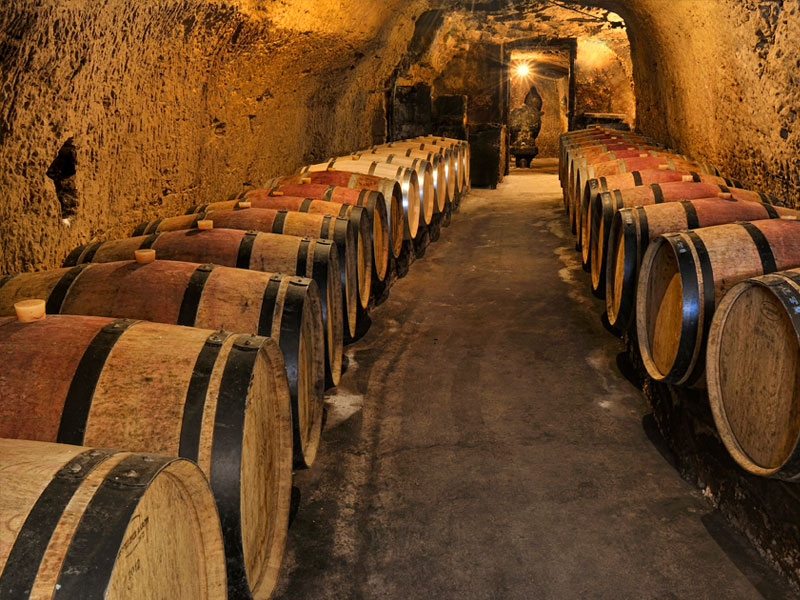
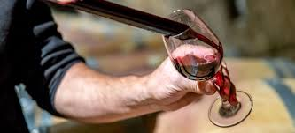

Le vin de Saumur est produit dans la région de la Loire, dans l’ouest de la France.
Il est connu pour sa grande qualité et pour la diversité de ses vins.
Le vignoble de Saumur se situe principalement dans le département du Maine-et-Loire.
Cette région bénéficie d’un climat tempéré favorable à la culture de la vigne.
Les sols calcaires donnent aux vins un goût particulier et raffiné.
Depuis plusieurs siècles, la viticulture occupe une place importante dans l’économie locale.
Les vignerons de Saumur transmettent souvent leur savoir-faire de génération en génération.
On y produit des vins rouges, blancs, rosés et des vins effervescents.
Le cépage le plus utilisé pour les vins rouges est le cabernet franc.
Pour les vins blancs, le chenin est le cépage principal.
Les vins de Saumur sont appréciés pour leurs arômes fruités et leur fraîcheur.
Le Saumur blanc accompagne très bien les poissons et les fruits de mer.
Le Saumur rouge est souvent servi avec des viandes ou des fromages.
Les vins effervescents de Saumur ressemblent parfois au champagne.
Ils sont élaborés selon une méthode traditionnelle avec une seconde fermentation en bouteille.
Le tourisme autour du vin attire de nombreux visiteurs chaque année.
Les caves creusées dans le tuffeau servent souvent à conserver les bouteilles.
Ces caves maintiennent une température idéale pour le vieillissement du vin.
Le vin de Saumur représente donc une richesse culturelle et économique pour la région.
Il participe également à la renommée des vins français dans le monde entier.
Aujourd’hui, les producteurs cherchent à développer une viticulture plus respectueuse de l’environnement.
Ainsi, le vin de Saumur reste un symbole important du patrimoine français.
Les vendanges correspondent à la récolte des raisins dans les vignes. Cette étape est très importante, car la qualité du raisin influence directement celle du vin. Les raisins peuvent être récoltés à la main ou à l’aide de machines selon les exploitations.
Après la récolte vient l’égrappage et le foulage. L’égrappage consiste à retirer les rafles, c’est-à-dire les parties vertes de la grappe. Ensuite, le foulage permet d’écraser légèrement les raisins afin de libérer le jus.
La fermentation est l’étape pendant laquelle le sucre du raisin se transforme en alcool grâce aux levures naturelles ou ajoutées. Cette transformation peut durer plusieurs jours ou plusieurs semaines selon le type de vin produit.
Le pressurage sert à séparer le jus des peaux et des pépins du raisin. Pour les vins rouges, cette étape intervient après la fermentation, tandis que pour les vins blancs, elle se fait généralement avant.
L’élevage permet au vin de se développer et d’améliorer ses arômes. Le vin peut être conservé dans des cuves ou dans des barriques en bois pendant plusieurs mois, voire plusieurs années.
Enfin, la mise en bouteille marque la dernière étape de la fabrication. Le vin est alors conditionné dans des bouteilles prêtes à être vendues et dégustées.
